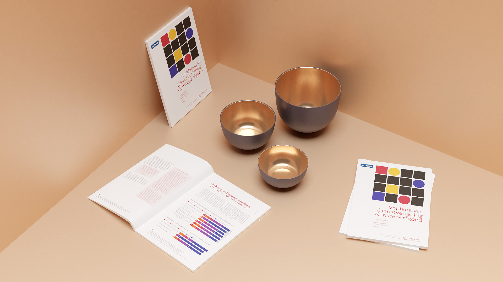
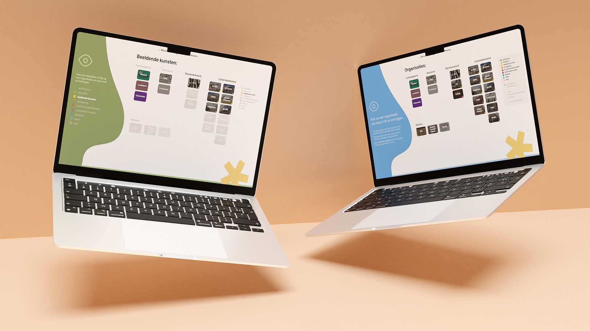
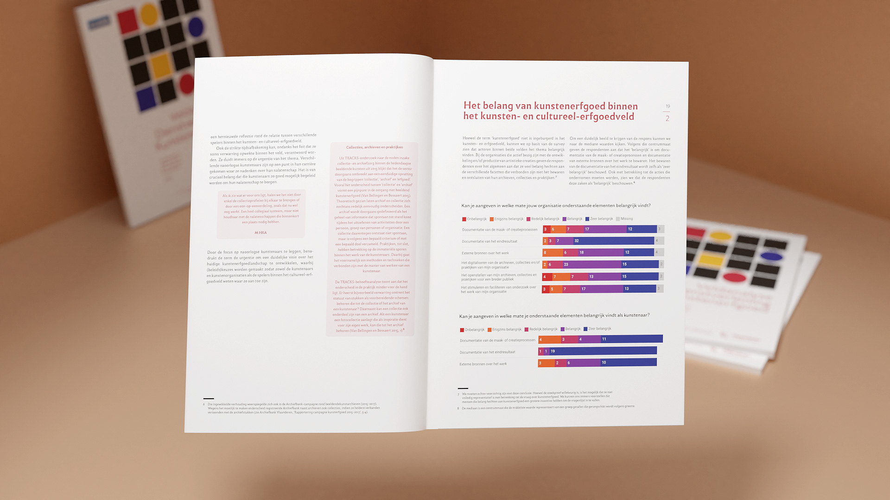
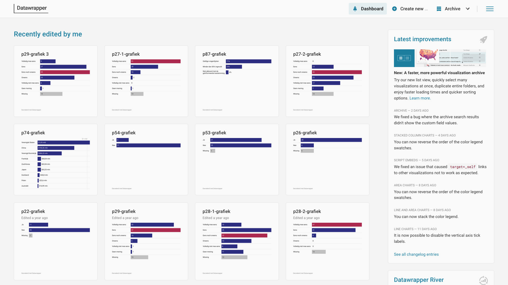

ku leuven
my role
The Catholic University of Leuven is a prominent research university in the city of Leuven, known for its cutting-edge research and sustainable initiatives. Their department of cultural studies was tasked with leading a major research project concerning the state of art heritage in Flanders. I was brought in as Lead UX / UI designer to help the department design two web-based data visualisations and a finalized research dossier.

objectives
The initial objectives included recognizing the importance of art heritage, leading efforts in Flanders, addressing the lack of resources, and increasing practical support and storage space. It emphasizes the value of decentralized approaches, inclusivity, time and resource valorization, effective coordination, a general reference framework, and filling gaps in services and facilities.
In order to help the Flemish government more intuitively understand the relations and interactions between all art heritage organizations active in Flanders, one or more visualization tools needed to be designed.
In order to help the Flemish government more intuitively understand the relations and interactions between all art heritage organizations active in Flanders, one or more visualization tools needed to be designed.
development
We focused on using a robust design system to create two intuitive interfaces that effectively convey the relationships between heritage organizations in Flanders.
One interface was needed to visualize the groups that formed between organizations. Some organizations had a specific focus on a discipline, while others had more than one.
A second interface was made to visualize the relations between organizations, shown with nodes and connecting lines.

One interface was needed to visualize the groups that formed between organizations. Some organizations had a specific focus on a discipline, while others had more than one.
A second interface was made to visualize the relations between organizations, shown with nodes and connecting lines.
print design

A thorough design system was used to create a clean and professional document, with a visual identity made of a distinct colorpalette and typeface. Several graphs were made to support the findings in the finalized dossier.

conclusion - feedback
The project culminated in the successful delivery of two highly interactive and visually appealing tools that were well-received by the Department of Cultural Studies and other stakeholders. The interactive map and network visualization provided a clear and comprehensive overview of the art heritage landscape in Flanders, facilitating more informed decision-making by the Flemish government.
The tools are now being used to inform policy decisions, prioritize funding allocations, and develop strategies for improving the preservation and accessibility of art heritage across the region. Additionally, the research dossier we compiled provided a solid foundation for future initiatives, with actionable recommendations that are already being implemented.
Overall, this project demonstrated the power of well-designed data visualization in shaping cultural heritage policy and underscored the importance of interdisciplinary collaboration in achieving impactful outcomes.
The tools are now being used to inform policy decisions, prioritize funding allocations, and develop strategies for improving the preservation and accessibility of art heritage across the region. Additionally, the research dossier we compiled provided a solid foundation for future initiatives, with actionable recommendations that are already being implemented.
Overall, this project demonstrated the power of well-designed data visualization in shaping cultural heritage policy and underscored the importance of interdisciplinary collaboration in achieving impactful outcomes.